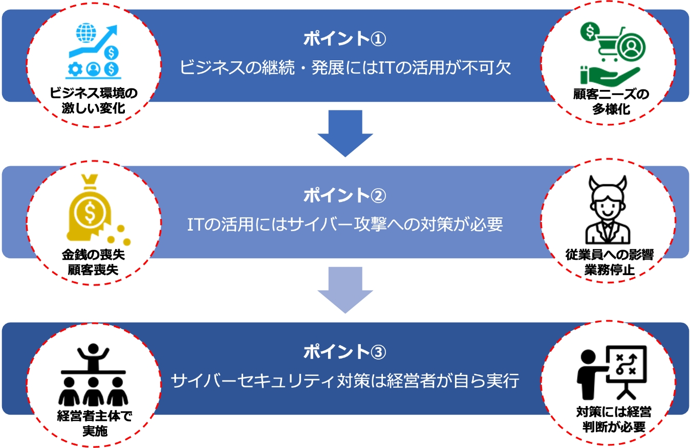

4-3-1. サイバーセキュリティ対策の重要性
デジタルトランスフォーメーションを推進していく際に、並行してサイバーセキュリティの確保に取組むことが重要です。変化の激しい現代社会でビジネスを継続していくためには、従来のITを活用して業務効率化や生産を向上させることだけでなく、データやデジタル技術を活用して、顧客視点で新たな価値を創出する、デジタルトランスフォーメーションを推進していくことが求められています。しかし、データやデジタル技術を活用する際に、サイバーセキュリティ対策を行わなければ、サイバー攻撃の標的となり、経営を揺るがすような被害を被ってしまう可能性があります。このような被害を受けないためにも、デジタルトランスフォーメーションの推進と並行してサイバーセキュリティの確保に取組むことが重要です。
サイバーセキュリティ対策を行うことで、リスクを経営上許容可能な範囲までに減少させることができます。また、サイバーセキュリティ対策には経営判断が必要になるため、経営者が主体となって指揮をすることが大切になります。
次のページから、経営者目線でサイバーセキュリティ対策を行わなければならない理由を以下のポイントごとに説明していきます。

図24. ITの活用とサイバーセキュリティ対策の関係性
（出典） 東京都産業労働局.” MISSION 3-1 サイバーセキュリティ対策が経営に与える重大な影響”. https://www.cybersecurity.metro.tokyo.lg.jp/security/guidebook/201/index.html,(参照 2023-07-10).